ゴールデンゲートパークへ行ったり、アパートで近射したりと出張中の身ながらもそこそこ練習してきました。
サンフランシスコ滞在もいよいよあさってで終わり。
明日には船便でターゲットマットを発送したいので近射は今日で最後。
近射の習慣は日本に帰ってもしっかり続ける所存です。
Safari のバグなのか、Gmail のバグなのか・・・。
ずいぶんと前からこの現象に悩まされていたんだけど、どうも改善されません。
ちょっと調べてみたら回避策をみつけました。
・Internet Square - SafariでGmailを見ようとすると固まる
標準フォントを「ヒイラギ丸ゴシック」にしてみて下さい。
多分嘘みたいに簡単にアクセス出来ます。
それでもダメなら、Prefarences内のcom,apple.safari.plist を取り除き、再起動してから上記を繰り返すとアクセス出来ますよ。
ほほぅ。
ヒイラギ丸ゴシックは手元にないんだけれども、ヒラギノ丸ゴシックにしたら動きました。

でもフォントタイプが指定されていないページも丸っこくなってしまうのがちょっと・・・。
ヒラギノ角ゴでも大丈夫だった。こっちの方が好み。
Osaka でも正常に使えるように修正してくれるのが一番なんですが。
妻とインターネット接続を奪い合うのもつらいので、去年えいやっと AirMac Express を買ってしまいました(正確には US 版なので AirPort Express)。
東京の自宅には UFO 型の AirMac があるんですが。
AirMac Express ベースステーション with AirTunes
パンケーキが大好物！
サンフランシスコには Sears Fine Food というところのパンケーキが有名です。
人気があるのは直径5cmくらいのちっちゃいパンケーキが9枚くらい出てくるメニュー。
柔らかくてウマイ！
しかも親切なことにパンケーキミックスも売ってます。
Sears Fine Food のパンケーキミックス
ウチではパンケーキを作るのは私の担当なので、先日会社帰りに買ってきたこのミックスに挑戦してみました。
パンケーキミックスの原材料は、小麦粉が２種類と、米粉、脱脂粉乳、砂糖、塩とかとか。
ミックスに書いてあるレシピによると
・パンケーキミックス 1 カップ
・牛乳 1 カップ
・サラダ油 1 スプーン
・溶かしバター 2 スプーン
だそうで。
卵はいらないのかな？
あと、パンケーキにサラダ油はいれたことなかったなー。
いい焼き具合になるのでしょうか。
しかし、全部まぜてみると随分サラリとしてて、うまくトロみが出ません。
大丈夫かナーと不安がりながらも焼いてみれば・・・・やっぱりペチャンコ。
パンケーキというよりもクレープに近い！
急遽大さじ９杯ほどパンケーキミックスを足したところ生地にほどよい粘りがでました。
しかし今度はやや焦げ気味・・。
やっぱ２枚目焼くときは濡れぶきんでフライパン冷やさないとね。
次回は牛乳を減らして卵をいれてみます。
パンケーキミックスはオンラインでも購入できます。
アメリカ国内しか発送してませんが。
・Sears Fine Food E-Store
{kind=link}
{kind=link}
チャイナタウンにて。100円ショップみたいなの。
ダイソーみたいにワクワクする雰囲気はなく、結構淡々と営業してます。
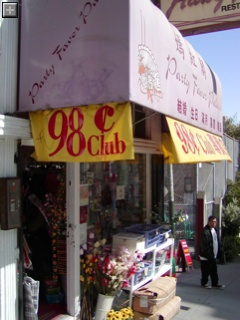
くにお君みたいのが右下にいるのは気のせい。
{kind=link}
macosXrumors より
オーストラリアに宇宙からしか見えない巨大な iPod 広告を建設中！だそうだ。
うそくさっ！
そんなに色々ゲーム楽しんでる暇あるのかという問題は抜きにして早速英語版のソフト買ってきました。
Bluetooth の無線マウス、 V270 をしばらく使ってみた感想。
・握り心地 - ☆☆☆☆
最初小さめで違和感を感じたけれどもすぐ慣れた。
ポインタの移動も、ドラッグもしやすい。
・取り回し - ☆☆☆☆☆
やっぱりケーブルなし、レシーバなしで使えるのは快適！
・トラッキング精度 - ☆☆☆☆
トラッキングの精度は問題なし。
会社の机はつや消し黒のテーブルだけどマウスパッドなくてもスムースに動かせる。
今のところポインタが飛んだことはない。
・高機能さ - ☆☆☆
まぁ、普通の３ボタン+ホイールなんで特殊な機能はない。
・Mac との相性 - ☆☆☆
ドライバなしで認識してくれるのは良い。
相性が悪いのか、V270 が報告してこないのか電池残量が「システム環境設定」で見てない。
・電池の持ち - ☆☆☆？？
１ヶ月くらい使ってるけど今のところ切れる様子はない。
・居眠り度 - ☆☆☆☆
普通の無線より Bluetooth が電池を食うためか、彼は早寝早起きを心がけているみたい。
だいたいの操作はトラックパッド、いっぱいポインタを操作するときはマウス、と使い分けてるので使おうとしたときは接続が切れてるってことが頻繁にある。
でもシャカシャカって揺さぶり起こせば2秒くらいでハンドシェイク完了するのでそれほどストレスにはならない。
たぶんトラックパッドを使わずにマウスメインで作業している分にはそうそうスリープすることはないと思う。
スリープするまでの間隔を設定できたらいいな。
・総合評価 - ☆☆☆☆
電池の持ちはまだ判明していないけど、やはりマウスは Logitech! と思わせる良い作りです。
日本ではまだ売ってないので、欲しい場合は amazon.com でっ。
・・・と思ったけど日本への発送はだめっぽい。
こちら↓のお店は海外発送してるようです。
http://www.jr.com/
追記:
日本で販売しているサイトがありました。
在庫は「要問合」となっていますが。
・クレバリー
を購入。
メトロイドのシリーズらしいけど今回は FPS 仕立て。
Unreal にハマった人間としては試さないわけにはいかない、ってことで買ってきました。
#最近電気の通るもので随分と散財中・・
操作は視点をタッチパネルで、前後左右を十字キーで行う。
左ききの自分にはめちゃめちゃ操作しづらい！ と思えばちゃんと左きき用モードがありました。
この場合はABXYで前後左右。
このタッチパネルを使った視点操作はとてもスムースで、NintendoDS は FPS 用に開発されたハードなんじゃないかと思うくらいストレスなく楽しめます。
WiFi Connection 対応ってことでインターネット経由で知らない誰かと対戦できる仕組みも用意されていて、
・Local Region（国内？）
・Worldwide（世界の誰かと）
・Friends(友達)
・Rivals(以前対戦してマークした人)
といった形で対戦相手もといった形で簡単に探し出すことができます。
このインターフェースが逸品でなかなか参考になります。
しかしオンライン対戦したらコテンパンにやられまくり。
どうやら日本ではまだ発売になってないらしい。
なんか得した気分。
{kind=link}
| メトロイドプライム:ハンターズ(仮称) 任天堂 おすすめ平均  Amazonで詳しく見る by G-Tools |
今日は妻と散歩がてら、ピザらしからぬ具を乗せることで有名だというCalifornia Pizza Kitchenへ。
Civic Center のすぐ近くで、アパートからは歩いて30分弱くらい。
オススメの BBQ Pizza はなかなかです。
パラパラとふりかけられているパクチーがしつこさを消してくれる感じで良い感じ。
Google Maps: California Pizza Kitchen Civic Center
サンフランシスコのアパートにはテレビはあるけどアンプ/スピーカがありません。
(もちろんテレビにはスピーカついてます)
そこで、去年バレンタインのプレゼントってことでヨメさんに買ってあげたのが In-Motion というスピーカ。
アップルストアにいっぱい並んでる中から
・iPod 対応(アップルストアにならんでるのはみんな対応してますが)
・デザインが良い(アップルストアに並んでるのはみんなカッコよく見えますが)
・コンパクト
・外部入力がある
・ACコンバータ付き
・電池でも動作可
・Dock コネクタのスルー端子有り
という条件で選びました。
平たい形状がカシュンッガコンッ、ってギミックで iPod Dock の親分みたいな形になるのも素敵。
で、使ってみれば大満足！
小さいスピーカで重低音をうまいこと響かせる技術を使っているそうで、PowerBook や iBook のそれとは比較にならないくらいメリハリのある音を出してくれます。
リモコン付きだし、付属の AC アダプタも一緒に収納できるぴったりのキャリングケースが付いてるのも良い。
なんだかプレゼントした自分が喜んでます。
オーディオ通の父によるとこの Altec Lansing ってけっこう老舗のオーディオメーカーみたい。
なんとなく iPod に対応させてそれっぽいデザインで作っただけの品物とは訳がちがいます。
| 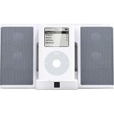 | アルテックランシング 2005-04-18 売り上げランキング : 1,027 おすすめ平均  満足 満足Amazonで詳しく見る by G-Tools |
オンラインDVDレンタルは Web サイトで DVD をポチっと選ぶだけで DVD が郵便かメール便で送られてきて、ポストに入れて返すっていうもの。
延滞料金かからなかったり、いちいちレンタルビデオ屋に行かなくて良かったり、貸し出し中の DVD があっても保留リストにため込んでおけば後で発送してくれたりと、リアルビデオ屋を超える使い勝手が大変魅力的です。
日本には幾つか業者があって、どこも２週間くらい無料お試し期間があるので一通り試してみました。
そこそこ品揃えが良い、発送/返却の対応が素早い、DVD の検索がしやすい、携帯電話に対応してる、ということで最終的に落ち着いたのが ぽすれん。
忙しいとか出張だとかで利用しない月があれば一時的に休会しておくことで月会費が発生しなくなるのも魅力的。
しかも2月20日から年会費が撤廃されてるらしい！
・お客様の声に応え、年会費永年無料へ！
http://posren.livedoor.com/info?id=91
さて、４月になればまた東京に帰るので復帰の手続きをしよう、と思ったけどそういえば ぽすれん は今話題のライブドア傘下の企業でした。
大丈夫かな？と思い訪問してみたら大丈夫です宣言が。
・ぽすれんをご利用の皆様へ
http://posren.livedoor.com/static/corner/info_20060302.html
なんだか唐突に ぽすれん の社長日記の宣伝までしてます。
>尚、本日「ぽすれん日記」を立ち上げましたので、今後はこちらで最新の情報を
>お伝えして参ります。
社長からもがんばります宣言が。
・ぽすれんからのお知らせです
http://blog.livedoor.jp/posren13/archives/50107883.html
ひとまず大丈夫宣言を信じることにして４月から休会解除することにします。
がんばれ ぽすれん！逆境をチャンスに変えるんだ！
いっぱい映画みるぞ！
昔秋葉原駅前の手品道具を売っている屋台で、腹に穴を開けた瓶に木を削りだして作った矢が貫通しているのを見ました。
穴は矢の胴体ぶんくらいの大きさしかなく、矢は削りだしでやじりも羽も一体化してるのでどう考えても瓶に通すことも抜くこともできない。
水かなんかでふやかすとスッポリ入る？
枝を穴に通したまま成長するのを待ってから矢を削り出す？
どうも現実味のない作り方しか思い浮かばないままはや十数年。
今日ぶらぶらしたらまた見つけてしまいました。
このテの物は「不可能物体」 "Impossible Objects" と呼ぶんだそうだ。
不思議で美しいギャラリーです。
種明かしはなし。
・不可能物体ギャラリー
http://www.kiyori.co.jp/Users/kiyori/impossible/index.htm
・Impossible Objects
http://www.johnrausch.com/PuzzleWorld/toc.asp?t=_cat/io001.htm&m;=cat/io000.htm
場外ホームランを打つと「海ポチャ」することで有名な SBC Park。
かつて新庄さんがいたサンフランシスコジャイアンツのホームグラウンドです。
SBC は AT&T; を買収して、ブランド名は AT&T; に移行したため3月1日からは AT&T; Park へと改名しました。
コマーシャルじゃ頻繁に SBC -> AT&T; を宣伝してます。
AT&T; Park?
でも看板はまだ SBC Park のまま・・・・。
日本だったら遅くとも 3/1 3:00 AM くらいまでには看板の入れ替え作業終了してるでしょうね。
このテキトーさがなんともアメリカン。
まぁ新規にネーミングライツを買い取った訳じゃないのでモチベーションがあがらないのはわかりますが。
{kind=link}
{kind=link}
この写真はみたまんま、鳥が水浴びしてるとこ。
水浴びしてること自体は普通の和やかな風景だけど、これはBoudin近くの駐車場の水たまり。
雨が降った直後でもないのに水深3cmくらいのりっぱな水たまりがぽっこりありました。
アメリカはどうも道路や歩道の整備が良くなく街中のいたるところに穴が開いていたり水たまりができていたりする。
歩きにくいし、これからの季節ボーフラの温床になるだろうし・・なんとかならないもんだろうか。
ガソリンは税金安いし高速道路も料金とらないしで道路整備にお金をかけられないんだろうけど、ちょっとひどい。
あ、あと歩道にガードレールも欲しいな。
アメリカでは関心低いようで決勝戦にも関わらず中継やってません！
しかし父のイキな計らいで MSN メッセンジャーのビデオ機能で中継してくれることに！！
しかし Mac の MSN メッセンジャーはビデオに対応していないので、Virtual PC を立ち上げて、その中でビデオを送ってもらうという荒技に成功！
せっかくなのでこちらのデスクトップの様子も生中継します。
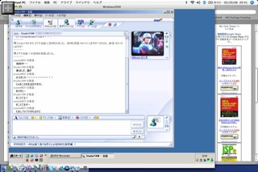
デスクトップの様子
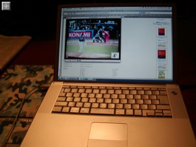
リアルデスクトップの様子
大平洋往復してるので大分遅延がありそうだけど、なんとか観られる画質です。
いやーしかし便利な時代になったもんです。
追記：
９回裏、イチローが２塁打で7-5!!!!
ここでチャットのセッションが切れる。
" StudioYAM とのビデオ会話は終了しました。"
あ・・・中継が切れた。親父は只今外出中。
マシンがスリープしたらしいです。
しょうがない、あとは Web のニュースをリロードしまくるか・・・。
{kind=link}
{kind=link}
土曜日の散歩の続き。
Coit Tower の後は歩いてフィッシャーマンズワーフへ。
Pier39近くのの無駄に広かった駐車場にはいつの間にかBoudinというサワドー(酸っぱいフランスパンみたいなの)屋さんができてた。
どうやら老舗のパン屋がちょっと廃れ気味（？）のフィッシャーマンズワーフにレストランを構えたらしい。
サワドー、サンフランシスコとくればクラムチャウダーは既定路線ということでクラムチャウダーを食べた。
水曜あたりに食べたばかりだけどやっぱりクラムチャウダーはウマイ！
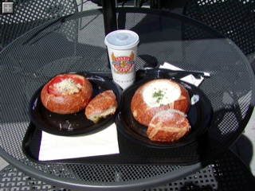
Google Maps:クラムチャウダーを食べたあたり
{kind=link}
フィッシャーマンズワーフは全然要す変わらないけど、３年前くらいに見た銀ピカの人とか、物陰に潜んで通行人を「ワッ」と脅かす人(周りの人はその様子をみて楽しんでる)とか、全く同じ大道芸人たちが相も変わらずいるのにびっくり。
儲かるのかなぁ？
フィッシャーマンズワーフの後はバスに乗って Exploratorium へ。
ここは科学・物理を見て触って体験できる展示がいっぱいある博物館。
上野の科学博物館にもそんな常設展示がありますね。
とにかくものすごいボリュームでたぶん半分くらいしか見られなかったけど大変満喫。
また機会があれば行ってみたい。
やたらと巨大な Exploratorium の(?)建物
Google Maps:Exploratorium はココ
散歩がてら、サンフランシスコの名所の中でまだ行ったことのない Coit Tower へ行ってきました。
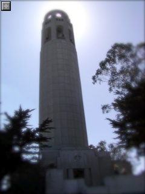
Pioneer Park にそびえる Coit Tower
Google Maps:ここらへん
{kind=link}
Coit Tower はサンフランシスコのイタリア街、North Beach の Pioneer Park 内に位置してます。
一人$3くらい払うともちろん展望台に上ることができて、サンフランシスコ市内だけでなくゴールデンゲートブリッジの先のサウサリートや、ベイブリッジの先のバークレーのあたりまで一望できて大変良い眺め！
天気の良い日のサンフランシスコ観光にはお勧めです。
久しぶりに Quick Time VR のパノラマを作ってみました。
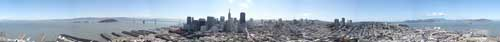
Coit Tower からの眺めを QuickTime VR のパノラマで。
QuickTime じゃないバージョンはこちら。
アルカトラズ島、Piar39、ゴールデンゲートブリッジ、ロシアンヒル、ベイブリッジ等々観光名所見物を一気に済ますことが出来ます。
パリス・ヒルトンも大好きというIn-N-Out Burgerへ行って参りました。
ジャンクフード好きながらも今まで食べる機会がなくちょっと気になってたとこ。
実は先週ドライブに行ったときにも挑戦しようと思ったんだけど、Wal-mart の敷地内の In-N-OUT は午後２時にもかかわらずメチャメチャ混んでてあきらめた。
アメリカ人ってホントハンバーガー好き。
メニューはハンバーガー、チーズバーガー、ポテト、ソフトドリンク、シェイクくらいしかない。やたらとチョイスがあって色々好みを聞かれて正直何でもいいから食わせてくれ、って困っちゃう日本人にもオススメ。
味の方は、野菜がシャキシャキと新鮮！、ハンバーグはボリュームはマクドナルドと変わらないものの、焼きたて感がかなり高くなかなかうまかった。
ポテトはアッサリと油分控えめ？カリカリに揚がったマクドナルド的なポテト好きにはちょっと物足りないかも。
会社の近所にもあるとうれしいなぁ。
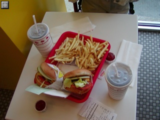
念願の In-N-Out
{kind=link}
散歩がてら、サンフランシスコの名所の中でまだ行ったことのない Coit Tower へ行ってきました。
Pioneer Park にそびえる Coit Tower
Google Maps:ここらへん
Coit Tower はサンフランシスコのイタリア街、North Beach の Pioneer Park 内に位置してます。
一人$3くらい払うともちろん展望台に上ることができて、サンフランシスコ市内だけでなくゴールデンゲートブリッジの先のサウサリートや、ベイブリッジの先のバークレーのあたりまで一望できて大変良い眺め！
天気の良い日のサンフランシスコ観光にはお勧めです。
久しぶりに Quick Time VR のパノラマを作ってみました。
Coit Tower からの眺めを QuickTime VR のパノラマで。
QuickTime じゃないバージョンはこちら。
{kind=link}
アルカトラズ島、Piar39、ゴールデンゲートブリッジ、ロシアンヒル、ベイブリッジ等々観光名所見物を一気に済ますことが出来ます。
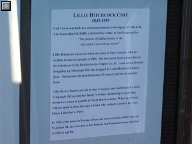
{kind=link}
Coit Tower の歴史
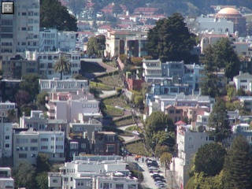
{kind=link}
ロシアンヒルを Coit Tower から望む
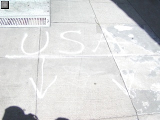
{kind=link}
Coit Tower 付近の地面にて。えーと、この先は USA じゃなくてどこなんだろう・・・
アメリカのキッチンで便利なのがディスポーザー。
生ゴミを砕いて下水に流してくれるのでゴミが減って楽チン！
でも先週からどうも調子がわるくて流が悪い。
いつもならゴリゴリゴリゴリズーンスーーーーーーーーーーー、って感じが
ゴリゴリゴリモギョモギョモギョガポガポガポガポｶﾞﾎﾟ・・・・。
一応流れるんだけど、ディスポーザーのスイッチを入れないとシンクの水が引いていかない。
関係あるのかないのかわからないけどアリンコがキッチンを徘徊し始めるし、困った。
木曜日にアパートのオフィスに行って修理を頼んだら、なんか金曜土曜は担当がいないので早くても日曜になるとのこと。えーそれは遅い。
とはいえ他に頼んだら金がかかるので、アサイチの１０時にお願いした。
日曜になった・・・・・・・・でも１１時になっても来ない。
オフィスに行って聞いたら担当に電話をかけてくれて「ごめん、あと１時間以内に行くワっ」って。この適当さがアメリカンだなぁー。
さて、修理に来てくれたアンちゃんはヒスパニック系の英語が得意でない感じの人。
こちらも英語得意じゃないもんだからいまいちやりとりがかみ合わないけど、どうやらディスポーザーではなく、その先の配管で詰まってるらしい。
なにやら仰々しいマシンを持ってきて詰まりをとってくれました。
「スネークだ」とかいってたけど、ポンプではなくてフレキシブルなドリルみたいなので詰まった物を砕き進んでくれるマシン。
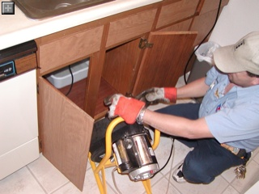
仰々しいマシンが飛び出した！
シンクの先はもちろん下水に繋がっていて、このスネーク君は下水に向かって掘り進んでくれた。つまり臭い。結構臭い。
でもスネーク君を引っ込めると通りはスムースに。アンちゃんでかした！
これでアリンコもいなくなると良いけど・・・・。
{kind=link}
WebLogic Platform 7.0 SP7 がリリース。
・日本BEAシステムズ - ダウンロード - WebLogic Platform 7.0
https://www.beasys.co.jp/BeaPortal/download/generalNew/begin.do?ID=1&VERSION;_KEY=13
日本語版のドキュメントはまだでてなかった。
・確認済みの問題(英語版)
http://e-docs.bea.com/wls/docs70/notes/issues.html#1199880
・SP7 で解決した問題(英語版)
http://e-docs.bea.com/wls/docs70/notes/resolved2.html#1043629
今までの WLS7.0 で使われてきた JDK1.3.1 は非サポートで、1.4.2 対応に変更されているので要注意。
JDK1.3.1 の EOL に伴う流れなのでしょうがない。
・Summary of Supported Operating System Configurations, by Release Number
http://edocs.bea.com/platform/suppconfigs/configs70/70_over/overview.html#1084689
JVM のメジャーバージョンを替えるくらいならいっそ同じ J2EE1.3 対応で最新の WLS8.1 か、J2EE1.4 まで対応している WLS9.1 に乗り替えてしまえ！という選択肢もアリ？
訂正:SP6じゃなくてSP7でした
今日は日本からトレーニングに来てる社員をお誘いして牡蠣を食べに！
場所はフェリービルディングにある、お気に入りのオイスターバー Hog Island Oyster。
http://www.hogislandoyster.com/
もてなすとかそういうの全く考えずにムシャムシャとクラムチャウダーと牡蠣を食べまくった。うまかった！
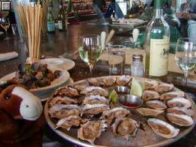
いつ来てもンマい
Google Maps:Hog Island Oyster はここらへん
{kind=link}
近所で昨日一人銃で撃たれて死亡、一人重傷だそうだ。
やっぱアメリカは怖いわ。
S.F. police investigate fatal Mission District shooting
Google Maps:だいたいここらへん
Google Maps で発生する IE のエラーの件で調べると良く見つかるのが body の onload で処理をしようという回避策。
でも blog のエントリを書くのにイチイチ onload を書き換えるのも面倒です。
あと、地図を表示するエントリが２つ以上同時に表示された場合に備えて既に onload イベントが存在する場合は上書きした上で、旧onload イベントを自分のイベント内で呼ぶように・・とか書くのはもっと面倒ですね。
あと、地図を表示する div 要素の ID が被らないようにするのも面倒です。
でも他に回避策が見つからなかったので
・表示している地図をblogに貼り付けるための html を生成
・地図の真ん中にマークを表示
・IE対策で、スクリプトは body の onload イベントで呼ばれる仕組み
・既に body の onload イベントがある場合は書き換えた onload イベントの最後にちゃんと呼びだす
・地図の div 要素は日付/時刻で一意になる
ということを自動的にやってくれるページを作ってみました。
・簡単Google Maps
Google Maps で調べた緯度経度を入力するのは面倒なので自由に行き来する bookmarklet を作ればもっと便利。
地図を貼り付けるのがあまりにも簡単になったものだから思わず適当に貼り付けてみました。
いつも行ってるゴールデンゲートパークのアーチェリー場
オーストラリア
グリーンランド
を見た。
http://www.imdb.com/title/tt0370032/
ミラ・ジョヴォビッチ主演の SF 映画。アメコミが原作らしい。
重力を自由に操るデバイスや、４次元ポケット的なもの（dimension compressionとかいってた)とか出てきて楽しい映像が続く。
内容はあんまりなく、マトリックス・スターウォーズ・甲殻機動隊・AKIRAのおいしいシーンをつなぎ合わせた感じ。
撮ってみたい映像が先行して脚本を書いていったんじゃないかと思う。
金曜夜は妻に誘われてちっちゃな劇団が公演する「ベニスの商人」を見に行った。
BART に乗って Balboa Park に辿り着くと、突然駅構内が停電！
でも他の皆様は平然としてるのがちょっと奇妙。停電ってそんなに普通に起こることなんだろうか？
家でコンセントにつなぎっぱなしの PowerBook が壊れないかちょっと心配。
駅から上がって地上に出ると雨は降っていないものの雷がゴロゴロ鳴っている。
うーん、さっさと目的の City College に辿り着かないと降られるかな？と思いきゃすぐさま雹が降ってきた。
ひょうだ！
珍しいなーと思えばサイズがみるみる大きくなってついにはビー玉くらいの巨大なものに！
こんなにデカい！
雹は激しく降りしきり、ものの数分で積もってしまった。
駅前はちょっと坂道なので、車が立ち往生するはバイクがこけるわで大混乱！
ものの数分で銀世界！
家の周りは地面がわずかに濡れている程度でひょうが降った様子は全くなし。
かなり局地的なものだったのでしょう。なんか得した気分。
今日はレンタカーで軽くドライブ＆お買い物。
まずは妻の希望で Wal Mart へ。たぶん初めての Wal Mart。
郊外にあることもあってとにかくでかい。今までに見た中でも最大級。
日本の自宅近所にあるビバ・ホームですらでかいと思ってたけどその３〜４倍くらいはあろうかという広さ！
洋服、日用雑貨、ガーデニング用品、アウトドア用品、ゲームと何でも揃いそうで便利。
とにかくでかいWal Mart
駐車場もバカでかい
お次はサンノゼにある Valley Fair モール。
たぶん３回目くらいだけどもいつ来ても大きさに驚かされる。
でかさにアングリしてるだけで特に買い物はしなかった。
サンフランシスコで毎回行ってみては混雑に負けてあきらめているCheesecake Factory があったのでトライ。
看板に従ってチーズケーキを注文したがコレもでかい！完食は断念。
一緒に頼んだトロピカルスムージーもマンゴーの味が引き立っていてとてもおいしかった。
{kind=link}
キャラメル＋ホワイトチョコレートのチーズケーキ
アメリカはどこへ行ってもスケールの大きさに圧倒される。
やっぱ土地があるのはいいなぁー。
一つの町くらいの大きさはある巨大な Valley Fair Mall
かなり近所の駅で火事が起きてるみたい。
死傷者は出てないとのことでなにより。
KTVU.com - Commute Chaos; Fire Shuts Down Embarcardero Station
TSSより
知らなかったけど科学技術計算用のライブラリらしい。
Generics など、JDK5.0 に対応したのが主な改善点らしい。
"A geographic coordinates module GIS/ISO compliant (with support for conversions between UTM, Lat/Long, XYZ, etc)." とあるので GPS ソフトを作る上で何か役立つかもしれない。
・JSicence 3.0
http://jscience.org/
Simon Brown氏の blog より。
忙しかったのか「一週間後に！」といってから２週間経ってのリリース。
実行には JDK5.0 と ServletAPI2.4/JSP2.0 準拠のコンテナが必要とのこと。
今自宅サーバは Panther で動いており JDK1.4.2 なので動かないなぁ・・。
単に Generics を使っているだけならば -target jsr14 でコンパイルし直せば良いけど、実際どうなんだろう。